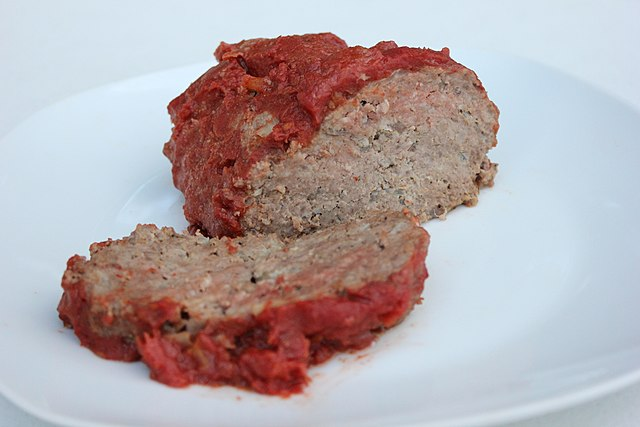

Hello World!
I don't know about you, but...
I'm pretty hungry right now. Here's a meatloaf recipe, it's whats for supper!

Image courtesy of WikiMedia Commons
FOR LOAF:
- 1 1/2 lbs ground beef
- 1 egg
- 1 minced onion
- 2 minced garlic cloves
- 1 cup milk
- 1 cup crushed cheez-its
- 1 teaspoon salt & pepper
- 1 teaspoon cajun seasoning
FOR SAUCE:
- 1/2 cup ketchup
- 1/2 cup brown sugar
- 1/2 teaspoon ginger
INSTRUCTIONS:
- Preheat oven to 350F
- Thoroughly mix all loaf ingredients in a big bowl
- Form meatloaf mix into a loaf shape in a lightly greased pan
- Mix sauce ingredients in a small bowl and microwave 30 seconds.
- Pour sauce mixture over the meatloaf
- Bake at 350 for roughly 1 hr until 160F
- Enjoy!